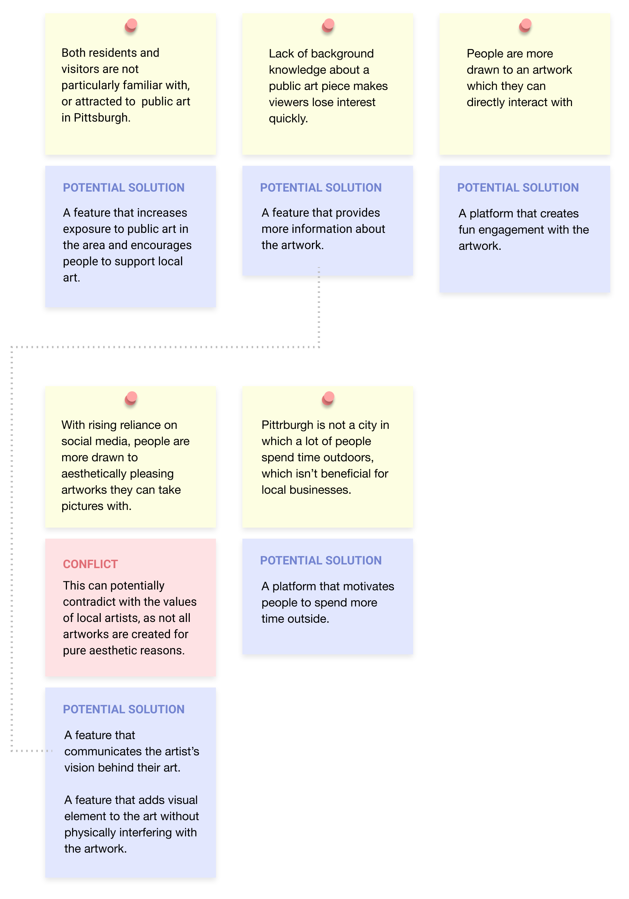

DESIGN PROCESS
Understand
Research the current state of public art scenes in Pittsburgh through background research and user journey analysis.
Define
Conduct user interviews to define the problem space and the users' needs.
Ideate
Brainstorm solutions through storyboarding and validate ideas through speed dating.
Design & Test
Design prototypes and test the service. Reiterate based on feedback.
UNDERSTAND
Background Research
Why Does Public Art Matter?
We blindly jumped into the project by asking this question first. Why does it matter so much in our lives? Is there a problem? What do we want to focus on within this broad topic?
To answer these questions, we conducted background research, focusing on the following criteria.1. History of public art2. Social, cultural, and economic benefits of public art3. Technology used to measure audience engagement with art4. Field Observation
Key Points
The following are the key points that helped us narrow our scope and focus on increasing civic engagement and pride through public art.
Economic Growth
Famous public landmarks in cities attract travelers and motivate locals to go outside. A continuation of this phenomenon ultimately leads to higher revenue for local businesses.
Increased attachment and pride for the city
High regards towards the public art within a city is directly related to increase in civic pride and attachment.
Stronger sense of community
Increased civic pride and cultural attachment also leads to a strong and vibrant community.
UNDERSTAND
Stakeholders & Users
Next, we wanted to have a better understanding of the people who are impacted by public art. Luckily, we found a similar research study called Metro 21’s Public Art + IoT = An Engaged Civic Space project. Through this, we were able to gain access to:
1. Interview footage from a Public Art & Civic Design manager in Pittsburgh2. Pedestrian interviews3. Usability-test recordings of Pittsburgh’s official public art website
With these information at hand, we were able to understand the pain points of people who are directly & indirectly impacted by public art. We also conducted a small interview with a local artist and a restaurant owner to hypothesize various stakeholder personas and customer journey map.
Stakeholder Persona
Customer Journey Map
DEFINE
Interviews
Now, it was time for us to conduct research that is more focused to our goal:
What do people think about public art in Pittsburgh?
Does public art impact how the citizens of Pittsburgh view their city? If so, are they positive or negative? How about the travelers? Is public art one of the motives for visiting Pittsburgh? If not, can public art become an unexpected encounter that creates a meaningful experience? — these were some of the questions we had in mind. To gain more insights on how people view public art in Pittsburgh, we interviewed 5 pedestrians in Pittsburgh. 3 of them turned out to be visitors.
Key Insights
Ideate
Brainstorm & Validate Ideas
Based on our insights, our team generated a few ideas that would aim to increase civic engagement with public art. We created 4 different storyboards that demonstrate our ideas, and briefed them with new interview participants (speed dating). Based on their reactions, we decided to combine the most popular ideas.
Solution
Our solution uses location-based AR, which enables users to engage with public art in real-time. Users can engage with the artwork and the people who have seen the artwork by expressing their reactions through 3D drawings and texts. The app also provides opportunity for users to discover more public art around the area and learn about the artist's intent. The social media aspect of the application allows people to communicate with friends as well as strangers. This solution not only helps residents build civic pride and communal interests, but also helps local artists and businesses.
DESIGN & TEST
Experience Prototype
Our first prototype was a low fidelity paper-experience prototype. We layered paper-made buttons on top of an existing augmented reality app that lets users virtually draw three-dimensional lines in space (Just A Line app).
DESIGN & TEST
Think-Aloud Protocol
To test the need for our service, we decided to use the think-aloud protocol method. To increase our chances of getting interviewees, we created a sign that said “Explore Augmented Reality,” and we placed it in front of Dippy the Dinosaur. In this case, the dinosaur is the public art, and if a passerby showed interest, we would then approach and ask if they would like to test out our low-fidelity app.
Reaction (+)
"This would definitely brighten the mood of the city!"
Positive reactions to the overall idea of the service and its premise
The signage in front of public artworks seems effective
Reaction (-)
"Concerns about hate & troll comments/3D art being posted in the app
App needs to be more intuitive with the instructions on how to use the app
Wording of some phrases can be fixed to sound more natural
DESIGN & TEST
UI Design
Based on the feedback from the user-testing participants, we made some changes to our service. We decided that a location-based push notification feature would be a great digital replacement for the signs that are placed near public art. We also took more consideration into the general usability of the app as well as some controversial elements such as hate/inappropriate comments.The next steps were wireframing, med & hi-fi prototyping, and usability testing. For this step of the process, I had to work on my own as this course project initially began and ended as a case study.
Final Insights & Takeaways
Although we initially focused on a very specific problem out of the three criteria that impact the livability of a city - increased sense of community and civic pride towards public artworks - we realized that the product has a potential to improve the other areas as well.
Economic growthDoes the art attract travelers? With gained popularity of the “AR public art phenomenon”, more travelers will visit Pittsburgh to experience this location-sensitive experience. Attachment and cultural identityCan the artworks define and represent Pittsburgh city, individuals, and communities? The fact that residents have creatively contributed to the space will increase the pedestrian’s emotional attachment. The exhibited artworks of individuals and communities will not only increase the engagement within each other but also represent those individual and communities. As a city that is very technologically driven, the AR experience will amply represent the city of Pittsburgh. Cultural understandingCan the viewers understand and relate to the artworks in Pittsburgh? The “Spin The Wheel” activity will tell the users interesting facts about specific artworks and invite them to respond to the facts using the AR app. This activity itself will increase the user’s cultural understanding and relatability to the artwork.

{kind=link}
{kind=link}
{kind=link}
{kind=link}
{kind=link}
{kind=link}
{kind=link}
{kind=link}
{kind=link}
{kind=link}
{kind=link}
{kind=link}
{kind=link}